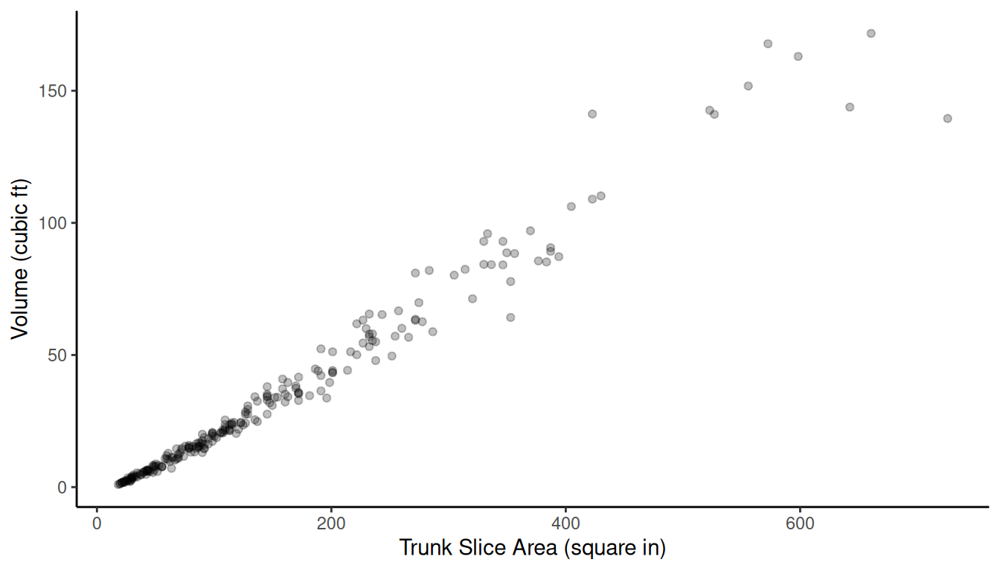
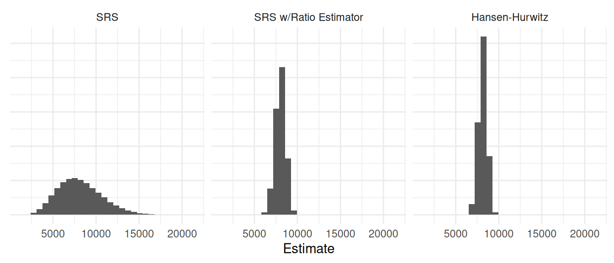
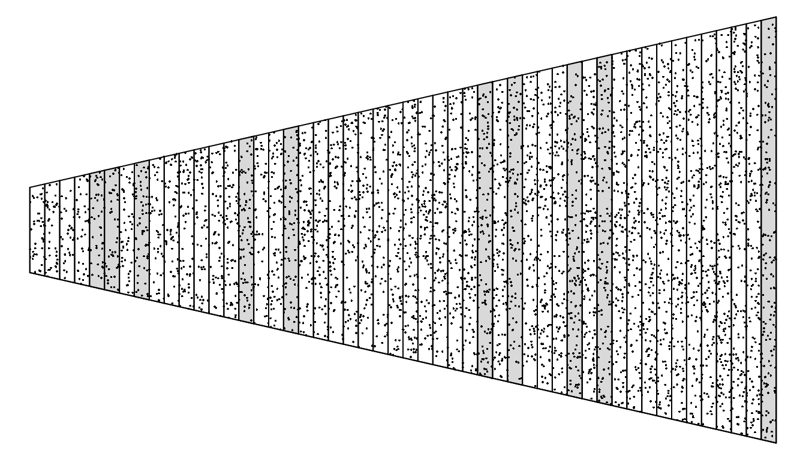
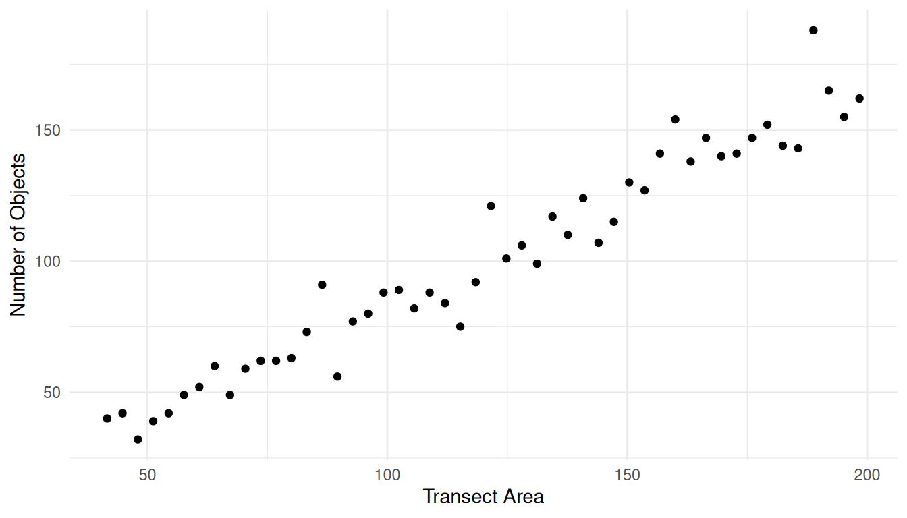
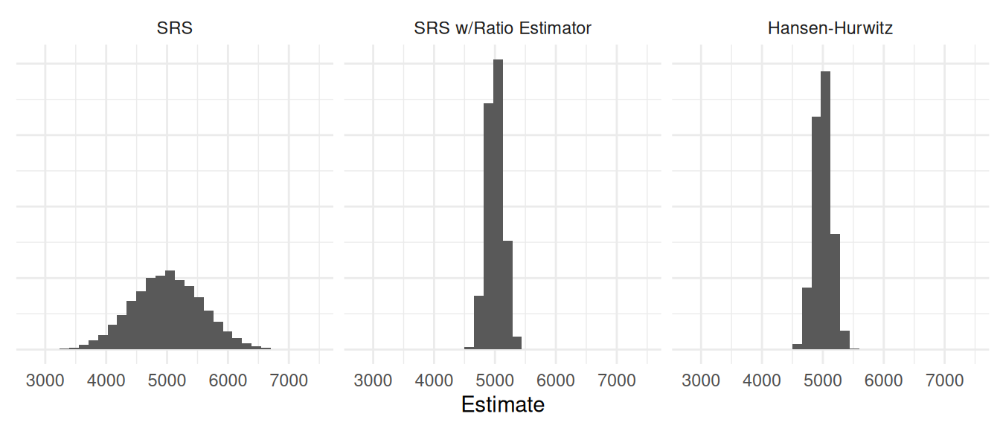

You can also download a PDF copy of this lecture.
This design can be described as follows:
Assume \(N\) sampling units, each with a specified selection probability \(\delta_i\).
Obtain a sample of \(n\) sampling units by selecting units one at a time such that on each draw the probability that the \(i\)-th unit is selected is \(\delta_i\). The selection probabilities do not change from draw to draw, so it is possible that we will select the same element on two or more draws (i.e., sampling with replacement).
Selection probabilities (\(\delta_i\)) are not generally equal to inclusion probabilities (\(\pi_i\)).
Example: Suppose we obtain a sample of \(n\) sampling units with replacement, where the selection probability of the \(i\)-th unit is \(\delta_i\). The inclusion probability of the \(i\)-the unit is then \[ \pi_i = 1 - (1 - \delta_i)^n. \]
Example: Selection probabilities are usually only useful when sampling with replacement. But they can be defined when sampling without replacement if we select the sample by selecting one unit at a time. Suppose we have a population with \(N\) = 10 elements, and a simple random sampling design without replacement with a sample size of \(n\) = 5. All elements have inclusion probabilities of \(\pi_i\) = \(n/N\) = 0.5. But the selection probabilities change over draws and depend on previous draws.
Here is one possible sample: \[ \mathcal{S} = \{\mathcal{E}_{4}, \mathcal{E}_{3}, \mathcal{E}_{7}, \mathcal{E}_{1}, \mathcal{E}_{9} \}. \] The selection probabilities are shown in the table below.| Draw | \(\mathcal{E}_{1}\) | \(\mathcal{E}_{2}\) | \(\mathcal{E}_{3}\) | \(\mathcal{E}_{4}\) | \(\mathcal{E}_{5}\) | \(\mathcal{E}_{6}\) | \(\mathcal{E}_{7}\) | \(\mathcal{E}_{8}\) | \(\mathcal{E}_{9}\) | \(\mathcal{E}_{10}\) | Selected |
|---|---|---|---|---|---|---|---|---|---|---|---|
| 1 | 1/10 | 1/10 | 1/10 | 1/10 | 1/10 | 1/10 | 1/10 | 1/10 | 1/10 | 1/10 | 4 |
| 2 | 1/9 | 1/9 | 1/9 | 0 | 1/9 | 1/9 | 1/9 | 1/9 | 1/9 | 1/9 | 3 |
| 3 | 1/8 | 1/8 | 0 | 0 | 1/8 | 1/8 | 1/8 | 1/8 | 1/8 | 1/8 | 7 |
| 4 | 1/7 | 1/7 | 0 | 0 | 1/7 | 1/7 | 0 | 1/7 | 1/7 | 1/7 | 1 |
| 5 | 0 | 1/6 | 0 | 0 | 1/6 | 1/6 | 0 | 1/6 | 1/6 | 1/6 | 9 |
| Draw | \(\mathcal{E}_{1}\) | \(\mathcal{E}_{2}\) | \(\mathcal{E}_{3}\) | \(\mathcal{E}_{4}\) | \(\mathcal{E}_{5}\) | \(\mathcal{E}_{6}\) | \(\mathcal{E}_{7}\) | \(\mathcal{E}_{8}\) | \(\mathcal{E}_{9}\) | \(\mathcal{E}_{10}\) | Selected |
|---|---|---|---|---|---|---|---|---|---|---|---|
| 1 | 1/10 | 1/10 | 1/10 | 1/10 | 1/10 | 1/10 | 1/10 | 1/10 | 1/10 | 1/10 | 2 |
| 2 | 1/9 | 0 | 1/9 | 1/9 | 1/9 | 1/9 | 1/9 | 1/9 | 1/9 | 1/9 | 6 |
| 3 | 1/8 | 0 | 1/8 | 1/8 | 1/8 | 0 | 1/8 | 1/8 | 1/8 | 1/8 | 1 |
| 4 | 0 | 0 | 1/7 | 1/7 | 1/7 | 0 | 1/7 | 1/7 | 1/7 | 1/7 | 7 |
| 5 | 0 | 0 | 1/6 | 1/6 | 1/6 | 0 | 0 | 1/6 | 1/6 | 1/6 | 3 |
| Draw | \(\mathcal{E}_{1}\) | \(\mathcal{E}_{2}\) | \(\mathcal{E}_{3}\) | \(\mathcal{E}_{4}\) | \(\mathcal{E}_{5}\) | \(\mathcal{E}_{6}\) | \(\mathcal{E}_{7}\) | \(\mathcal{E}_{8}\) | \(\mathcal{E}_{9}\) | \(\mathcal{E}_{10}\) | Selected |
|---|---|---|---|---|---|---|---|---|---|---|---|
| 1 | 1/10 | 1/10 | 1/10 | 1/10 | 1/10 | 1/10 | 1/10 | 1/10 | 1/10 | 1/10 | 9 |
| 2 | 1/10 | 1/10 | 1/10 | 1/10 | 1/10 | 1/10 | 1/10 | 1/10 | 1/10 | 1/10 | 9 |
| 3 | 1/10 | 1/10 | 1/10 | 1/10 | 1/10 | 1/10 | 1/10 | 1/10 | 1/10 | 1/10 | 7 |
| 4 | 1/10 | 1/10 | 1/10 | 1/10 | 1/10 | 1/10 | 1/10 | 1/10 | 1/10 | 1/10 | 1 |
| 5 | 1/10 | 1/10 | 1/10 | 1/10 | 1/10 | 1/10 | 1/10 | 1/10 | 1/10 | 1/10 | 10 |
They would also remain constant if the selection probabilities were unequal.
Assuming an element sampling design using sampling with replacement, the Hansen-Hurwitz estimator of \(\tau\) is \[ \hat\tau = \frac{1}{n}\sum_{i \in \mathcal{S}}\frac{y_i}{\delta_i}. \] The estimated variance of this estimator is \[ \hat{V}(\hat\tau) = \frac{1}{n(n-1)}\sum_{i \in \mathcal{S}}(y_i/\delta_i - \hat\tau)^2. \] Example: Suppose we select a sample of \(n\) = 3 units with replacement: \(\mathcal{E}_5\), \(\mathcal{E}_2\), and \(\mathcal{E}_5\) again. The target variable values of \(y_5\) = 4 and \(y_2\) = 1, and selection probabilities of \(\delta_5\) = 0.05 and \(\delta_2\) = 0.01. What is the estimate of \(\tau\) and the estimated variance of \(\hat\tau\)?
What is the Hansen-Hurwitz estimator if all selection probabilities are equal (i.e., all \(\delta_i = 1/N\))?
Note: For the estimator of \(\mu\), we would divide \(\hat\tau\) by the number of elements in the population (\(N\) for element sampling, and \(M\) for cluster sampling), and the estimated variance of \(\hat\tau\) by the square of this (\(N^2\) for element sampling, and \(M^2\) for cluster sampling). But see the section below on estimation of \(\mu\) with PPS cluster sampling.
How should we specify the selection probabilities? The best choice would be to use \[ \delta_i = \frac{y_i}{\sum_{i=1}^N y_i}. \] That is, \(\delta_i = y_i/\tau_y\). Why would this be best?
Since we do not know \(y_i\) before we sample, instead perhaps we can find an auxiliary variable that is approximately proportional to \(y_i\) such that \(y_i \approx cx_i\), then we could use \[ \delta_i = \frac{x_i}{\sum_{i=1}^N x_i}. \] That is, \(\delta_i = x_i/\tau_x\).
Note: We are implicitly assuming here that all \(y_i > 0\) and all \(x_i > 0\).
Example: Suppose we have the following \(N\) = 5 sampling units.| Unit | \(x_i\) | \(\delta_i\) |
|---|---|---|
| 1 | 1 | |
| 2 | 4 | |
| 3 | 2 | |
| 4 | 5 | |
| 5 | 8 |
What would be the selection probabilities assuming that \(y_i\) is approximately proportional to \(x_i\)?
Example: Consider the observations of a target variable (volume) and an auxiliary variable (area) for a population of elements.  Let \(y_i\) and \(x_i\) be the volume and trunk slice area, respectively. Let’s compare three approaches to estimating \(\tau_y\).
Simple random sampling with \(\hat\tau_y = N\bar{y}\).
Simple random sampling with the ratio estimator \(\hat\tau_y = \tau_x\bar{y}/\bar{x}\).
Sampling with replacement with selection probabilities of \(\delta_i = x_i/\tau_x\) and using the Hansen-Hurwitz estimator.
Note: The value of \(\tau_y\) is 8124.9.
| Estimator | Variance | Bound |
|---|---|---|
| SRS | 6548857.3 | 5118.1470 |
| SRS w/Ratio Estimator | 342844.8 | 1171.0591 |
| Hansen-Hurwitz | 234438.3 | 968.3766 |
Now consider a situation of estimating the number of objects in transects where the transects vary in size. Let \(y_i\) be the number of objects, and let \(x_i\) be the size of the transect.

Note: The value of \(\tau_y\) is 5000.
| Estimator | Variance | Bound |
|---|---|---|
| SRS | 331972.37 | 1152.3409 |
| SRS w/Ratio Estimator | 17951.49 | 267.9664 |
| Hansen-Hurwitz | 21302.52 | 291.9076 |
It would seem that sampling with replacement would be less efficient than sampling without replacement since there is a probability of including the same sampling unit more than once. So why would we ever use a with replacement sampling design?
If \(n\) is much smaller than \(N\) (as is often the case), then the probability of selecting the same unit more than once is negligible and so the loss in efficiency in small. In such cases sampling with replacement is almost like sampling without replacement.
The mathematics of sampling with replacement is much simpler, which makes both sampling design and analysis much more tractable in practice. Later we will discuss sampling without replacement with unequal inclusion probabilities, which also can be used to improve estimation. But outside of some special cases (e.g., stratified random sampling) the actual process of selecting the sample is much more complex, requiring specialized algorithms and expertise.
Consider a cluster sampling design but where the clusters are sampled with replacement with (selection) probabilities proportional to cluster size so that we use \(m_i\) for \(x_i\). Then \[ \delta_i = \frac{m_i}{\sum_{i=1}^N m_i} = \frac{m_i}{M}. \] This is sometimes called sampling with probabilities proportional to size (PPS).
As before let \(y_i\) be the cluster total for the \(i\)-th cluster so that \(y_i = \sum_{i \in \mathcal{S}} y_{ij}\). Then the Hansen-Hurwitz estimator for \(\tau\) can be written as \[ \hat\tau = \frac{1}{n}\sum_{i \in \mathcal{S}}\frac{y_i}{\delta_i} = \frac{M}{n}\sum_{i \in \mathcal{S}}\frac{y_i}{m_i}, \] since \(\delta_i = m_i/M\). The estimated variance for \(\hat\tau\) then becomes \[ \hat{V}(\hat\tau) = \frac{M^2}{n(n-1)}\sum_{i \in \mathcal{S}}(y_i/m_i - \hat\tau/M)^2. \] The Hansen-Hurwitz estimator of \(\mu\) is obtained as \(\hat\mu = \hat\tau/M\). That is, \[ \hat\mu = \frac{1}{n}\sum_{i \in \mathcal{S}}\frac{y_i}{m_i}. \] The estimated variance of \(\hat\mu\) is then \[ \hat{V}(\hat\mu) = \frac{1}{n(n-1)}\sum_{i \in \mathcal{S}}(y_i/m_i - \hat\mu)^2. \]
Example: A cluster sampling design selects \(n\) = 3 boxes using sampling with replacement with probabilities proportional to cluster size (i.e., \(\delta_i = m_i/M\)). The number of widgets in these boxes are \(m_1\) = 3, \(m_2\) = 4, and \(m_3\) = 5. The total weight of the widgets in these boxes are \(y_1\) = 6.2, \(y_2\) = 7.5, and \(y_3\) = 10.3. Assume that the population of 425 widgets is contained in 100 boxes. Assuming sampling with replacement with probabilities proportional to size, what are the estimates of \(\tau\) and \(\mu\) as given by the Hansen-Hurwitz estimator?